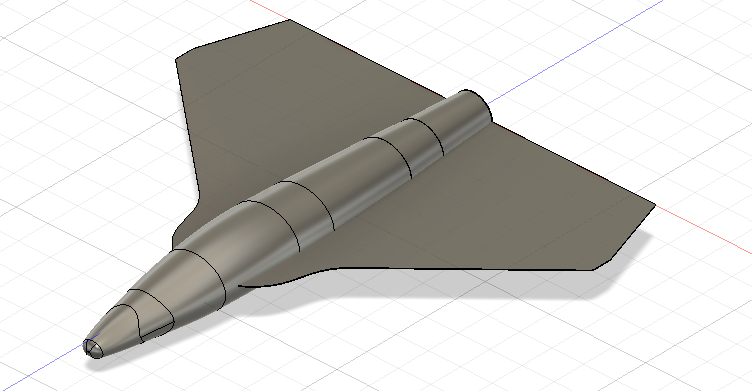
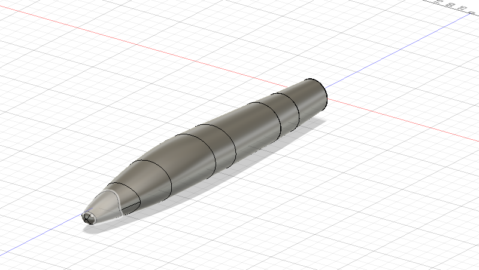

X65 Aether — Airframe, Fuselage & Active Canards
Build in Progress
Aerodynamic and structural CAD design of the compact 65cm wingspan X65 Aether UAV, powered via the Cephalon v1 flight controller. Currently evaluating wing planforms and airfoil profiles, integrating newly added active canards for pitch and maneuver authority, and shaping the central fuselage around the selected 64mm EDF ducting while reserving nose volume for a potential front-end radar payload.
Development Status Tracker
Stage 2 of 5 // Wing Planform & Fuselage CAD
01. Concept
02. Wing & Canard CAD
03. Airframe Print
04. Static & Thrust
05. Maiden Flight
Currently Working On: Comparing candidate wing shapes and airfoil sections in CAD, integrating active canard pivot/linkage geometry, and packaging the 64mm EDF alongside reserved nose space for a possible radar front-end.
Airframe65 cm Wing + Active Canards
Propulsion64mm Electric Ducted Fan (EDF)
Avionics CoreCephalon v1 Flight Controller
Fuselage PackagingEDF Duct + Nose Radar Bay
Photo Album (X65 Airfoil & Fuselage Studies)


